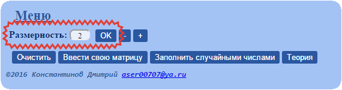
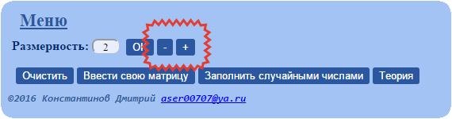
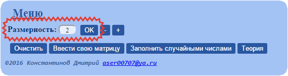
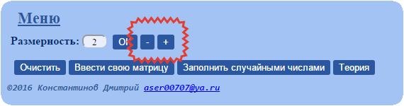
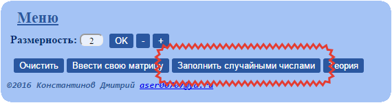
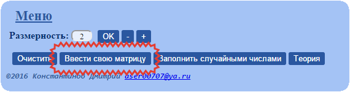
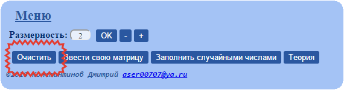

Выбор размерности
Для выбора размерности матриц используйте поле "Размерность". Введите размерность матрицы и нажмите на кнопку "ОК".
Или используйте кнопки "-" и "+" соответсвенно для уменишение или увелечения размероности.
Для выбора размерности матриц используйте поле "Размерность". Введите размерность матрицы и нажмите на кнопку "ОК".
Или используйте кнопки "-" и "+" соответсвенно для уменишение или увелечения размероности.
Чтобы сгенерировать случайную матрицу указанной размерности, нажмите "Заполнить случайными числами".
Чтобы ввести матрицу вручную, нажмите "Ввести свою матрицу".
Для очистки рабочей области нажмите на кнопку "Очистить".
